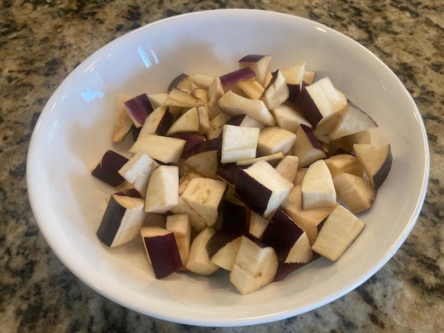
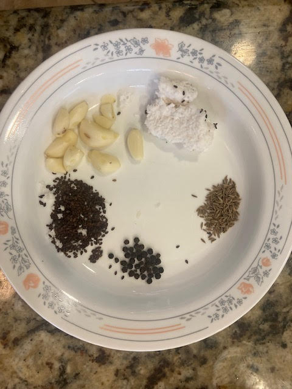
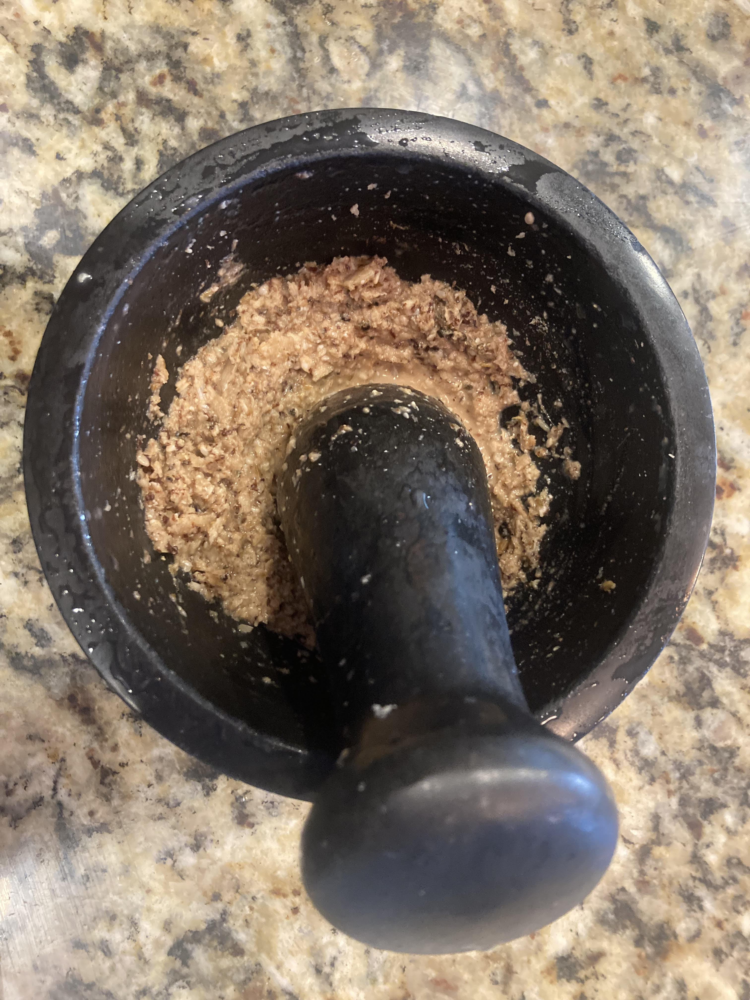
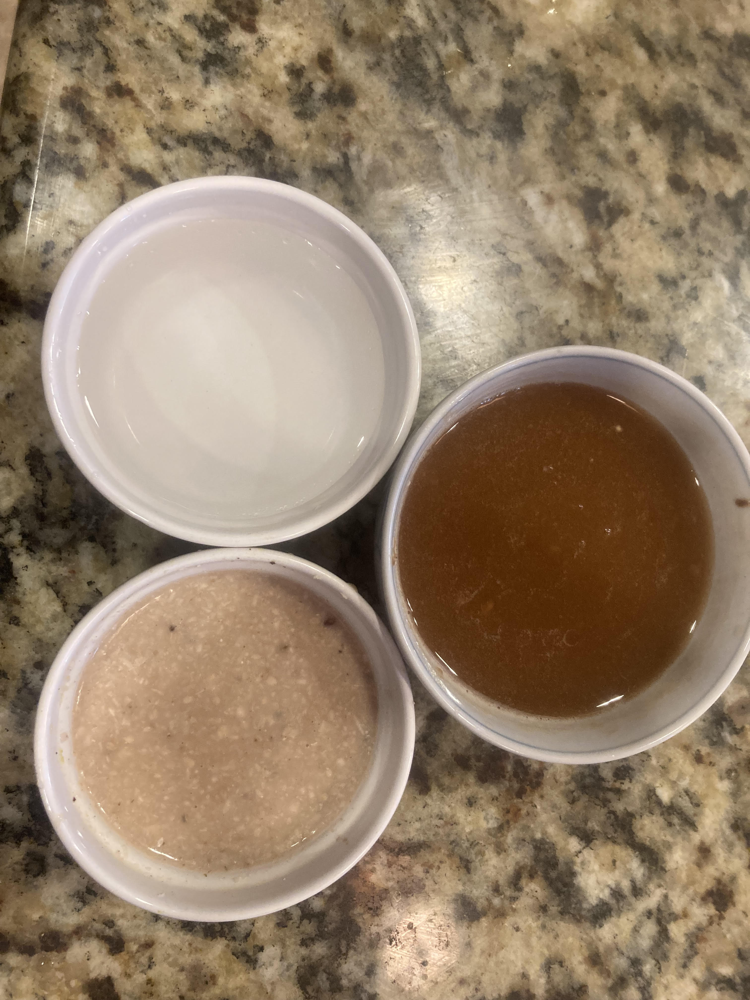
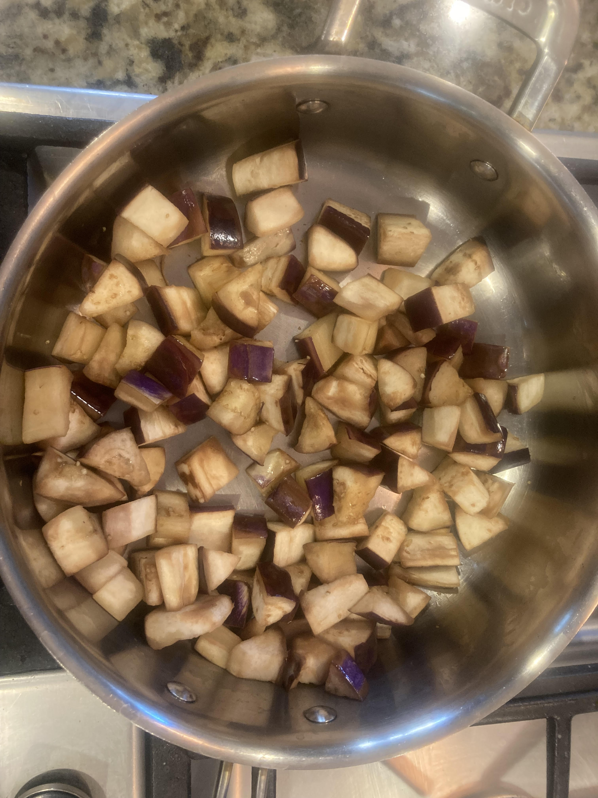
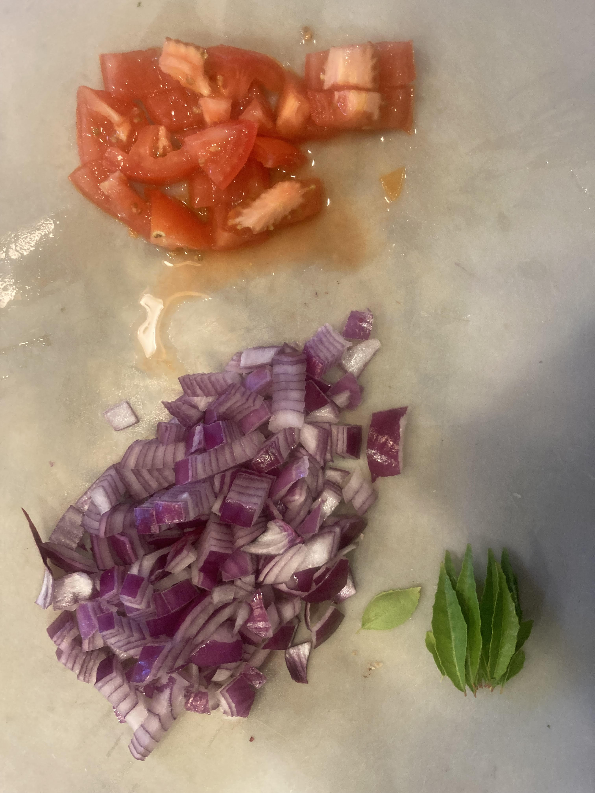
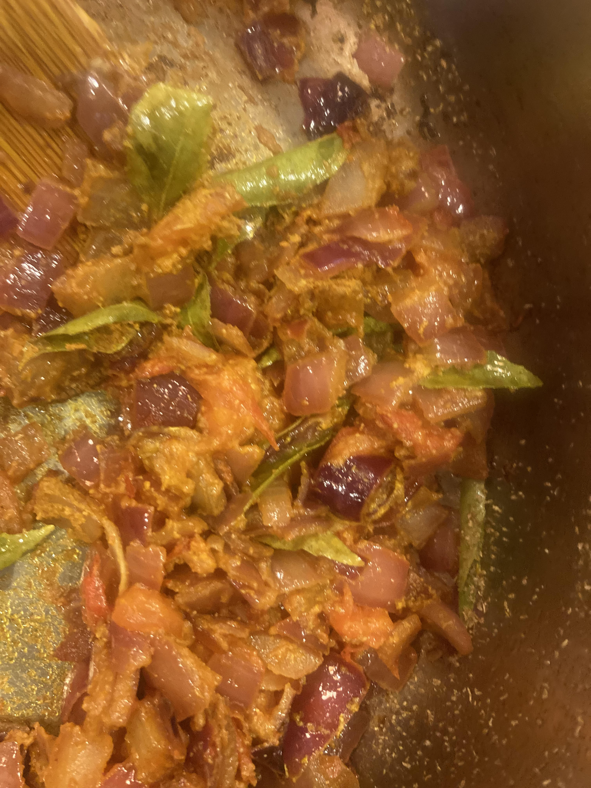
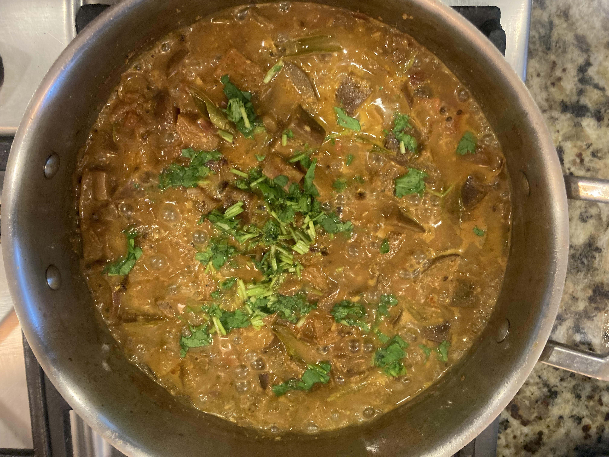

Description
A simple and most delicious Eggplant recipe perfect for lunch or dinner. It's great for rotis or rice.
Ingredients
- Total 2 tbsp cooking oil
- 1 long Eggplant or 250 gms Brinjal
- 1 onion chopped
- 1 sprig curry leaves
- 1 big tomato
- 1/2 tsp chilli powder
- 1/2 tsp corriander powder
- 1/4 tsp turmeric powder
- 1/2 cup tamarind pulp
- 1/2 cup water
- Chopped Corriander leaves
For paste :
- 2 tbsp coconut pieces
- 2 tsp sesame seeds
- 8 garlic cloves
- 1/2 tsp cumin
- 1/2 tsp pepper
Instructions
- Heat a pan and pour 1tbsp of oil on it.
- Cut the eggplant into cubes and add to the pan with a pinch of salt . Saute for 2 minutes and keep it aside
- Make the paste with the list specified in the ingredients.
- Add 1tbsp oil and saute chopped onion with curryleaves and saute for few mins.
- Add chopped tomato and saute for a min.Add chili,corriander and turmeric powders and saute for a min
- Add the grounded paste and saute for 3 mins.
- Add Fried brinjal.Add Tamarind pulp and water and mix well. Cook it with lid on for 6 to 8 mins.
- Garnish with corriander leaves.
- Serve hot with rotis or rice.